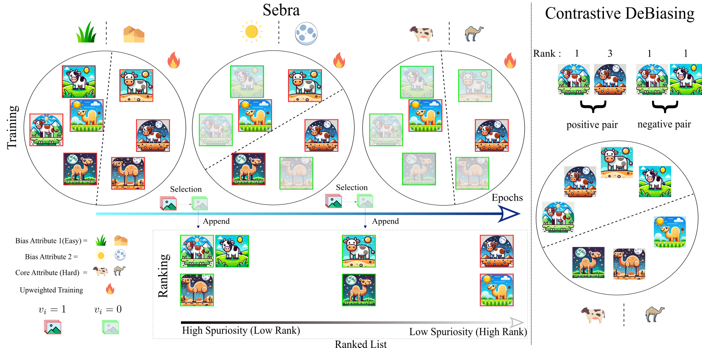
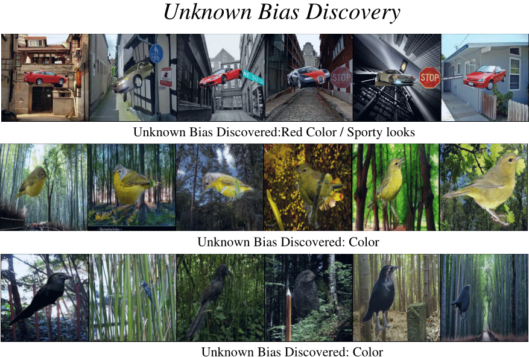
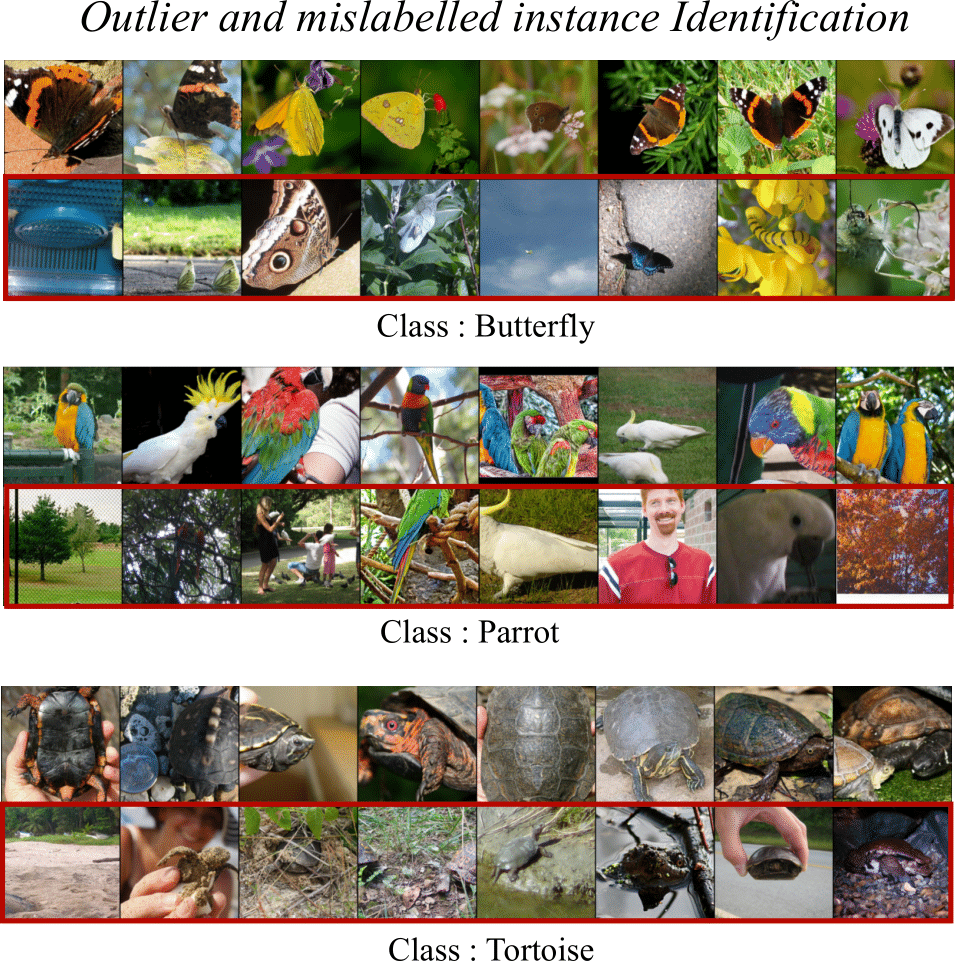
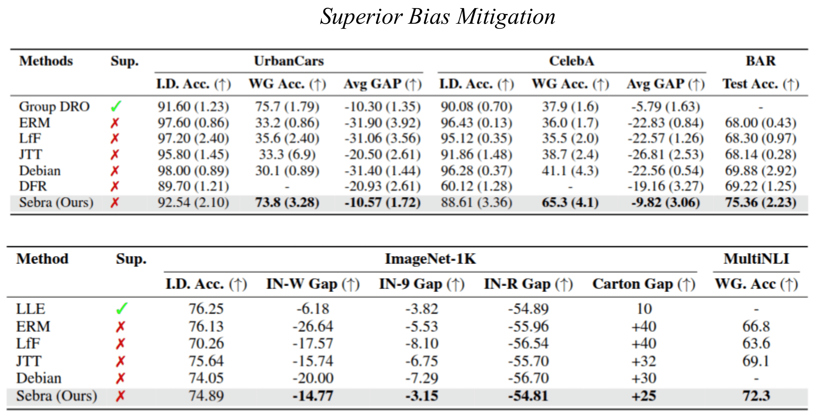

Sebra is a cutting-edge solution designed to enhance ML pipelines for addressing biases and improving data quality. Its standout features include:
Sebra involves three process at each epoch : Selection, Upweighted Training and Ranking. The ranking obtained via Sebra is utilised for contrastive DeBiasing.
Bias Ranking obtained via Sebra facilitates discovery of previously unknown biases even in specifically curated bias datasets.
Sebra assigns high rank to outlier and mislabelled training samples thereby enabling easy identification of noisy samples and outliers.
Contrastive Debiasing utilises bias ranking obtained from Sebra to mitigate multiple biases and obtain unbiased models even on in-the wild datasets like Imagenet-1K
@inproceedings{
anonymous2025sebra,
title={{SEBRA} : Debiasing through Self-Guided Bias Ranking},
author={Anonymous},
booktitle={The Thirteenth International Conference on Learning Representations},
year={2025},
url={https://openreview.net/forum?id=MyVC4X5B2X}
},
}